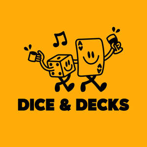

Trade Mark Journal No.2026/005 30 January 2026
UK00004323740 14 January 2026 (30,32,43)

- Class 30
- Coffee; Coffee drinks; Cappuccino; Coffee based drinks; Iced coffee; Chocolate coffee; Coffee beverages; Coffee pods; Flavoured coffee; Beverages with coffee base; Beverages with a coffee base; Instant coffee; Viennese pastries; Coffee substitutes [artificial coffee or vegetable preparations for use as coffee]; Coffee beans; Danish pastries; Coffee extracts for use as substitutes for coffee; Bakery goods; Decaffeinated coffee; Malt coffee; Coffee based beverages; Coffee flavourings; Ground coffee.
- Class 32
- Beer; Malt beer; Non-alcoholic beer; Bock beer; Saison beer; Beers; Low-alcohol beer; Craft beer; Barley wine [Beer]; Barley wine [beer]; Black beer [toasted-malt beer]; Beer and brewery products; Ginger beer; Flavored beer; Wheat beer; Coffee-flavored beer; Beer wort; Non-alcoholic beers; Root beer; Root beers, non-alcoholic beverages; Dried hops for brewing beer; Non-alcoholic beer flavored beverages; Craft beers; Lager; Alcohol-free beers; Imitation beer; De-alcoholized beer; Flavored beers; Black beer; Root beers; Flavoured beers; De-alcoholised beer; Low alcohol beer; Bitter [Beers]; Beer-based beverages; Non-alcoholic malt drinks; Ale; Non-alcoholic malt beverages; Hops (Extracts of -) for making beer; Extracts of hops for making beer; Non-alcoholic beer-based cocktails; Hop extracts for manufacturing beer; Coffee-flavored ale; Beer-based cocktails; Lagers; Kvass [non-alcoholic beverage]; Sarsaparilla [non-alcoholic beverage]; Non-alcoholic wine; Kvass [non-alcoholic beverages]; Carbonated non-alcoholic drinks; Cider, non-alcoholic; Cola drinks; Non-alcoholic beverages with tea flavor; Non-alcoholic beverages flavored with coffee; Non-alcoholic drinks; Ginger ale; Malt syrup for beverages; Non-alcoholic beverages flavoured with coffee; Non-alcoholic soda beverages flavoured with tea; Non-alcoholic malt free beverages [other than for medical use]; Non-alcoholic carbonated beverages; Ales; Non-alcoholic flavored carbonated beverages; Alcohol free wine; Non-alcoholic wines; Non-alcoholic fruit drinks; Alcohol free cider; Non-alcoholic beverages; Beverages (Non-alcoholic -); Non-alcoholic beverages flavored with tea; Non-alcoholic fruit vinegar beverages.
- Class 43
- Cafe services; Café services; Cafés; Coffee shops; Coffee shop services; Serving food and drink in Internet cafes; Bar and restaurant services; Restaurant and bar services; Ramen restaurant services; Providing food and drink in Internet cafes; Sushi restaurant services; Bistro services; Take-away restaurant services; Coffee bar services; Salad bars [restaurant services]; Serving food and drink in doughnut shops; Carvery restaurant services; Fast-food restaurant services; Hotel restaurant services; Self-service restaurant services; Providing food and drink in doughnut shops; Take-out restaurant services; Udon and soba restaurant services; Restaurant services; Japanese restaurant services; Restaurants (Self-service -); Self-service restaurants; Tempura restaurant services; Washoku restaurant services; Mobile restaurant services; Serving food and drink in restaurants and bars; Restaurant services incorporating licensed bar facilities; Brasserie services; Spanish restaurant services; Hookah lounge services; Catering in fast-food cafeterias; Providing food and drink in bistros; Providing food and drink in restaurants and bars; Snack bar services; Eateries; Tourist restaurants; Delicatessens [restaurants]; Cocktail lounge buffets; Restaurants; Provision of food and drink in restaurants; Office catering services for the provision of coffee; Hookah bar services; Serving food and drink for guests in restaurants; Guesthouse; Self-service cafeteria services; Restaurant services for the provision of fast food; Restaurant reservation services; Booking of restaurant seats; Cocktail lounge services; Lounge services (Cocktail -); Take-away food and drink services; Grill restaurants; Catering of food and drinks; Takeaway food and drink services; Beer bar services; Food and drink catering; Catering of food and drink; Catering (Food and drink -); Airport lounge services; Teahouse services; Shisha bars; Tapas bars; Carry-out restaurants; Preparation of food and drink; Providing food and drink; Providing of food and drink; Provision of food and drink; Serving food and drinks; Serving food and drink for guests; Hospitality services [food and drink]; Food and drink catering for banquets; Catering for the provision of food and drink; Providing food and drink for guests; Services for the preparation of food and drink; Food and drink preparation services; Food and drink catering for cocktail parties; Food and drink catering for institutions; Providing food and drink for guests in restaurants; Preparation of food and beverages; Services for providing food and drink; Corporate hospitality (provision of food and drink); Provision of food and beverages; Services for the provision of food and drink; Take away food and drink services; Providing food and beverages; Club services for the provision of food and drink; Preparation and provision of food and drink for immediate consumption; Catering services for the provision of food and drink; Catering for the provision of food and beverages; Arranging of wedding receptions [food and drink]; Providing of food and drink via a mobile truck; Fast food restaurants.
VALINOR HOLDINGS LTD